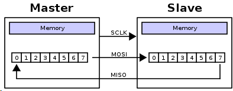
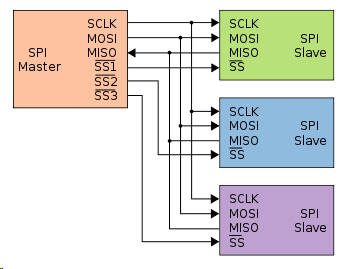
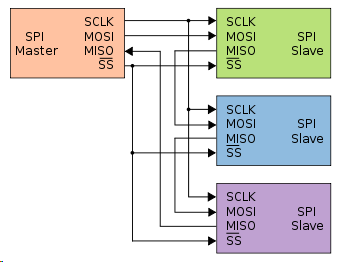
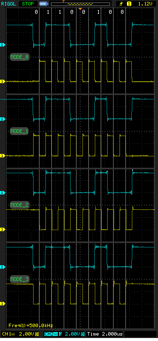
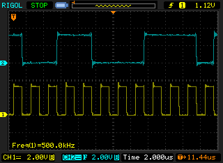

Serial Peripheral Interface - Последовательный синхронный стандарт передачи данных в режиме полного дуплекса.
Принимающая (ведомая) периферия синхронизирует получение битовой последовательности с тактовым сигналом. К одному последовательному периферийному интерфейсу ведущего устройства-микросхемы может присоединяться несколько микросхем. Ведущее устройство выбирает ведомое для передачи, активируя сигнал «выбор кристалла» (chip select) на ведомой микросхеме. Периферия, не выбранная процессором, не принимает участия в передаче по SPI.
В SPI используются четыре цифровых сигнала:
MOSI — выход ведущего, вход ведомого (англ. Master Out Slave In). Служит для передачи данных от ведущего устройства ведомому.
MISO — вход ведущего, выход ведомого (англ. Master In Slave Out). Служит для передачи данных от ведомого устройства ведущему.
SCLK или SCK — последовательный тактовый сигнал (англ. Serial Clock). Служит для передачи тактового сигнала для ведомых устройств.
CS или SS — выбор микросхемы, выбор ведомого (англ. Chip Select, Slave Select).
Конкретные имена портов интерфейса SPI могут различаться в зависимости от производителя аппаратных средств, при этом возможны следующие варианты:
MOSI: SIMO, SDI (на устройстве), DO, DON, SO, MRSR;
MISO: SOMI, SDO (на устройстве), DI, DIN, SI, MTST;
SCLK: SCK, CLK;
SS: nCS, CS, CSB, CSN, nSS, STE, SYNC.
Частота следования битовых интервалов в линиях передачи данных определяется синхросигналом SCK, который генерирует ведущее устройство, ведомые устройства используют синхросигнал для определения моментов изменения битов на линии данных, при этом ведомые устройства никак не могут влиять на частоту следования битовых интервалов. Как в ведущем устройстве, так и в ведомом устройстве имеется счетчик импульсов синхронизации (битов). Счетчик в ведомом устройстве позволяет последнему определить момент окончания передачи пакета. Счетчик сбрасывается при выключении подсистемы SPI, такая возможность всегда имеется в ведущем устройстве. В ведомом устройстве счетчик обычно сбрасывается деактивацией интерфейсного сигнала SS.
Передача осуществляется пакетами. Длина пакета, как правило, составляет 1 байт (8 бит), при этом известны реализации SPI с иной длиной пакета, например, 4 бита. Ведущее устройство инициирует цикл связи установкой низкого уровня на выводе выбора подчиненного устройства (SS) того устройства, с которым необходимо установить соединение.
При низком уровне сигнала SS:
Подлежащие передаче данные ведущее и ведомое устройства помещают в сдвиговые регистры. После этого ведущее устройство начинает генерировать импульсы синхронизации на линии SCLK, что приводит к взаимному обмену данными. Передача данных осуществляется бит за битом от ведущего по линии MOSI и от ведомого по линии MISO. Передача осуществляется, как правило, начиная со старших битов.

В простейшем случае к ведущему устройству подключено единственное ведомое устройство и необходим двусторонний обмен данными. В таком случае используется трехпроводная схема подключения. Интерфейс SPI позволяет подключать к одному ведущему устройству несколько ведомых устройств, причем подключение может быть осуществлено несколькими способами.
Радиальная структура связи с несколькими ведомыми устройствами через SPI
Первый способ позволяет реализовать радиальную структуру связи (топология типа «звезда»), его принято считать основным способом подключения нескольких ведомых устройств. В данном случае для обмена более чем с одним ведомым устройством ведущее устройство должно формировать соответствующее количество сигналов выбора ведомого устройства (SS). При обмене данными с ведомым устройством, соответствующий ему сигнал SS переводится в активное (низкое) состояние, при этом все остальные сигналы SS находятся в неактивном (высоком) состоянии. Выводы данных MISO ведомых устройств соединены параллельно, при этом они находятся в неактивном состоянии, а перед началом обмена один из выходов (выбранного ведомого устройства) переходит в активный режим.
Кольцевая структура связи с несколькими ведомыми устройствами через SPI

Рис - Радиальная структура.
Второй способ позволяет реализовать структуру связи типа «кольцо». В данном случае для активации одновременно нескольких ведомых устройств используется один сигнал SS, а выводы данных всех устройств соединены последовательно и образуют замкнутую цепь. При передаче пакета от ведущего устройства этот пакет получает первое ведомое устройство, которое, в свою очередь, транслирует свой пакет следующему ведомому устройству и так далее. Для того, чтобы пакет от ведущего устройства достиг определенного ведомого устройства, ведущее устройство должно отправить еще несколько пакетов.

Рис - Кольцевая структура.
Возможны четыре комбинации фазы (CPHA) и полярности (CPOL) сигнала SCLK по отношению к сигналам данных. Режимы работы определяются комбинацией бит CPHA и CPOL:
CPOL = 0 — сигнал синхронизации начинается с низкого уровня;
CPOL = 1 — сигнал синхронизации начинается с высокого уровня;
CPHA = 0 — выборка данных производится по переднему фронту сигнала синхронизации;
CPHA = 1 — выборка данных производится по заднему фронту сигнала синхронизации.
Для обозначения режимов работы интерфейса SPI принято следующее соглашение:
режим 0 (CPOL = 0, CPHA = 0);
режим 1 (CPOL = 0, CPHA = 1);
режим 2 (CPOL = 1, CPHA = 0);
режим 3 (CPOL = 1, CPHA = 1).
CPOL - старший бит, CPHA - младший.

На этом рисунке показаны сигналы MOSI (синяя линия) и SCK (жёлтая линия). Во всех случаях передаётся число 0x64. Светлые вертикальные линии показывают момент выборки данных. Рассмотрим режим 2, для которого, как мы помним, CPOL=1, а CPHA=0. Таким образом мы видим что синхронизирующий сигнал изначально имеет высокий уровень, а выборка производится по переднему фронту (в данном случае спадающему). Так как осциллограф у меня имеет только два канала, сигналы ~CS и MISO не показаны. Но в данном случае они не так интересны, например, сигнал ~CS представляет собой просто «провал» на всём протяжении передачи данных.
Преимущества SPI
- Полнодуплексная передача данных по умолчанию.
- Более высокая пропускная способность по сравнению с I²C или SMBus.
- Возможность произвольного выбора длины пакета, длина пакета не ограничена восемью битами.
- Простота аппаратной реализации:
* более низкие требования к энергопотреблению по сравнению с I²C и SMBus;
* возможно использование в системах с низкостабильной тактовой частотой;
* ведомым устройствам не нужен уникальный адрес, в отличие от таких интерфейсов, как I²C, GPIB или SCSI.
- Используется только четыре вывода, что гораздо меньше, чем для параллельных интерфейсов.
- Однонаправленный характер сигналов позволяет при необходимости легко организовать гальваническую развязку между ведущим и ведомыми устройствами.
- Максимальная тактовая частота ограничена только быстродействием устройств, участвующих в обмене данными.
Недостатки
- Необходимо больше выводов, чем для интерфейса I²C.
- Ведомое устройство не может управлять потоком данных.
- Нет подтверждения приема данных со стороны ведомого устройства (ведущее устройство может передавать данные «в никуда»).
- Нет определенного стандартом протокола обнаружения ошибок.
- Отсутствие официального стандарта, что делает невозможным сертификацию устройств.
- По дальности передачи данных интерфейс SPI уступает таким стандартам, как UART и CAN.
- Наличие множества вариантов реализации интерфейса.
- Отсутствие поддержки горячего подключения устройств.
Обзор SPI подсистемы в Linux
Драйверы SPI в Linux делятся на две части. Первая — это драйверы SPI контроллеров, которые работают непосредственно с железом конкретно взятого контроллера. Такие драйверы определяют как настроить контроллер, какие действия предпринять при переходе в режим пониженного энергопотребления (suspend) и выходе из него(resume), выбор следующей передачи (spi_transfer) из очереди передач в сообщении (spi_message, об очередях чуть ниже) и отправка его непосредственно в порт, также определяется как активировать/деактивировать конкретное устройство посредством CS (функции cs_activate/cs_deactivate). В этой статье я не буду описывать данный тип драйверов. Как правило, они уже реализованы для тех MCU/eMPU на которые существует порт Linux, и лезть в них руками надо только в том случае, если вам нужна какая-то специфичная функция, вроде Chip Select Decoding, для возможности активации нужного ведомого устройства посредством внешней логики. Иногда это бывает полезно, например, в случае недостатка GPIO.
Вторая часть — это протокольные драйверы, используемые для работы с различными ведомыми устройствами, которые подключены к шине SPI. Данные драйверы называют «протокольными», потому что они лишь отправляют и получают различные данные от ведомых устройств, при этом не работая напрямую с каким-либо оборудованием. Именно данный тип драйверов нам наиболее интересен, так как позволяет добавить поддержку интересующего ведомого устройства в систему, его то мы и рассмотрим.
Большинство протокольных драйверов представляет собой модули ядра. Например, если устройство представляет собой аудиокодек подключаемый по SPI, то драйвер будет также использовать функции предоставляемые ALSA, а программы (например, madplay) смогут работать с ним посредством символьного устройства /dev/audio, не имея ни малейшего понятия о том как он аппаратно устроен и к какой шине подключен.
Также ядро предоставляет протокольный драйвер общего назначения, называемый spidev, с интерфейсом в виде символьного устройства. Он позволяет совершать полудуплексные обращения к ведомому SPI-устройству посредством стандартных системных вызовов read() и write(), устанавливать режим работы, а также производить полнодуплексный обмен данными посредством ioctl() вызовов.
Таким образом протокольные драйверы для SPI устройств можно разделить на два типа:
Все обращения к SPI устройствам Linux ставит в очередь. Протокольные драйверы SPI оперируют явно или не явно сообщениями представленными структурой struct spi_message, которая является мультисегментной SPI транзакцией.
struct spi_message {
struct list_head transfers;
struct spi_device *spi;
unsigned is_dma_mapped:1;
void (*complete)(void *context);
void *context;
unsigned actual_length;
int status;
struct list_head queue;
void *state;
};
transfers — связанный список передаваемых сегментов в транзакции (передач);
spi — указатель на spi устройство, в очереди которого стоит данное сообщение;
is_dma_maped — если данный флаг «истина», то предоставлены оба, dma и cpu виртуальные адреса для каждого буфера передачи;
complete — обратный вызов, вызываемый для извещения об окончании транзакции;
context — аргумент для обратного вызова complete();
actual_length — полное число байт, которые были переданы во всех успешных предачах;
status — 0 в случае успеха, либо отрицательное значение с errno в случае ошибки;
Структура spi_message используется для выполнения атомарной последовательности передач данных, каждая из которых представлена структурой spi_transfer. Последовательность передач «атомарна» в том смысле, что шина SPI не может быть использована для передачи другого сообщения spi_message до тех пор, пока не будет полностью отправлено предыдущее. На некоторых системах, многие такие последовательности могут быть выполнены как единая запрограммированная DMA передача. На всех системах данные сообщения ставятся в очередь, и могут быть завершены уже после транзакций с другими устройствами. Все обращения к отдельно взятому ведомому устройству всегда выполняются в FIFO порядке.
Структура struct spi_transfer описывает отдельную передачу в связанном списке сообщения и определяет пару буферов для чтения/записи.
struct spi_transfer {
const void *tx_buf;
void *rx_buf;
unsigned len;
dma_addr_t tx_dma;
dma_addr_t rx_dma;
unsigned cs_change:1;
u8 bits_per_word;
u16 delay_usecs;
u32 speed_hz;
struct list_head transfer_list;
};
tx_buf — указатель на буфер данных в пространстве памяти ядра, которые необходимо передать, либо NULL;
rx_buf — указатель на буфер данных в пространстве памяти ядра, в который данные следует считать, либо NULL;
len — размер буферов rx и tx в байтах;
tx_dma — DMA адрес tx_buf, используется если установлен параметр spi_message.is_dma_mapped;
rx_dma — DMA адрес rx_buf, используется если установлен параметр spi_message.is_dma_mapped;
speed_hz — устанавливает скорость для передачи, отличную от установленной по-умолчанию для устройства. Если данное значение равно 0, то используется скорость по-умолчанию, указанная в поле max_speed_hz структуры spi_device.
bits_per_word — устанавливает количество бит на слово, отличное от определённого по умолчанию. Если данное значение равно 0, то используется значенние по-умолчанию, указанное в поле bits_per_word структуры spi_device.
delay_usecs — время ожидания в микросекундах, после того как был отправлен последний бит передачи и перед тем как сменить состояние chipselect'а, либо начать передачу следующей передачи в очереди. Будьте крайне осторожны с данным параметром, нужно смотреть в какой части драйвера контроллера реализуется задержка. Например, для чипов серии at91 она реализована в обработчике прерывания, так что её использование чревато последствиями.
При инициализации структуры spi_transfer существует очень важный момент, они обязательно должны быть выделены в области памяти доступной для DMA через kmalloc, kzalloc и иже с ними. Если master-драйер использует dma, то при использовании статически объявленных массивов драйвер будет падать при попытке передачи.
При передаче данных по SPI количество записанных бит всегда равно количеству считанных. Протокольные драйверы всегда должны предоставлять указатели на буферы tx_buf и/или rx_buf. В некоторых случаях они могут предоставлять DMA адреса для передаваемых данных.
Возможность переопределения скорости передачи данных и количества бит на слово для каждой передачи в отдельности зависит от конкретной реализации драйвера и аппаратных возможностей контроллера. Например, для контроллера SPI в чипах серии at91 возможность переопределения полей speed_hz и bits_per_word не предусмотрена, поэтому они должны быть всегда установлены в 0, иначе вы получите ошибку при попытке передачи данных.
Если указатель на tx_buf установлен как NULL, то SPI контроллер будет выталкивать нули при заполнении буфера rx_buf. В случае, когда rx_buf установлен в NULL, считываемые данные будут игнорироваться. Количество выталкиваемых (и захватываемых) байтов всегда равно len. Попытка вытолкнуть только часть слова приведёт к ошибке. (Например, при попытке выталкивании трёх байт и длине слова 16 бит или 20 бит, в первом случае будет использовано 2 байта на слово, во втором — 4 байта).
Данные для передачи всегда хранятся в порядке специфичном для данной аппаратной платформы. При отправке/считывании данных происходит автоматическое конвертирование порядка байт из специфичного для SPI (обычно big-endian, за исключением случая когда выставлен параметр SPI_LSB_FIRST) в аппаратно-специфичный порядок для данного CPU. Например, если параметр bits_per_word равен 16, то буферы будут занимать по 2N байт, и содержать по N слов с длиной 16 бит каждое, хранящемся в байтовом порядке, специфичным для данного CPU.
В том случае, если размер слова не является степенью двойки, то представление слова в памяти включает дополнительные биты. Слова, хранящиеся в памяти для протокольного драйвера всегда являются выровненными по правому краю (right-justified), так что дополнительные биты всегда будут являться старшими разрядами.

В данном случае tx-буфер содержит значение 0xf98e, установленное значение bits_per_word соответствует 12 битам на слово. Устройство работает в SPI_MODE_0. На рисунке синяя линия соответствует выходу MOSI контроллера, а жёлтая — SCK. Здесь хорошо видно что при отправке пришло только 0x098e, старшие четыре бита были отброшены, так как они считаются дополнительными. Если совсем просто, то одно 12-битное слово занимает в памяти два байта, а разница между размером слова в памяти и его действительным размером составляет 2*8 — 12 = 4 бита, которые отбрасываются при передаче.
Все SPI передачи начинаются с активации соответствующего chipselect'а. Обычно ведомое устройство остаётся активным до ухода последней передачи в сообщении. Драйвера могут изменять состояние cs посредством флага cs_change в структуре spi_transfer.
Если передача не последняя в сообщении, то флаг cs_change используется для того, чтобы chipselect на короткое время стал неактивным в середине сообщения. Такое переключение cs может быть необходимо для завершения команды ведомого. Это позволяет с помощью одного spi_message выполнять сразу группу передач для одного ведомого.
Когда передача является последней в сообщении, ведомый может оставаться выбранным до тех пор, пока не начнётся передача следующего сообщения. Начало передачи сообщения другому устройству деактивирует текущий cs. Для работы некоторых устройств транзакции должны состоять из очереди spi_message сообщений, где содержимое последующего сообщения зависит от результата предыдущих. В таком случае транзакция целиком завершается переведением cs в неактивное состояние.
Код, который передаёт spi_message (и его spi_transfer'ы) на нижние уровни отвечает за управление памятью данных структур. Все поля структур не определённые явно, должны быть инициализированы нулевым значением. После отправки сообщения (и отдельных передач в нём), необходимо игнорировать последующие сообщения до тех пор, пока не отработает обратный вызов завершения данного сообщения.
SPI не поддерживает какого-либо механизма автоматического обнаружения устройств. К тому же, в большинстве случаев, SPI устройства не предусматривают горячее подключение/отключение, поэтому они, как правило, просто распаиваются непосредственно на плате. В связи с этим данные устройства считаются специфичными для конкретной платы (board-specific). Параметры для таких устройств указываются в файле платы: arch/.../mach-*/board-*.c.
Например, вот так будет выглядеть установка параметров для аудиокодека tlv320aic23b для отладочной платы SK-AT91SAM9260:
static struct spi_board_info ek_spi_devices[] = {
{ /* tlv320aic23b CODEC */
.modalias = "tlv320aic23b",
.chip_select = 0,
.max_speed_hz = 10 * 1000 * 1000,
.bus_num = 1,
.mode = SPI_MODE_1,
.platform_data = &tlv320aic23b_data,
},
…
}
где
modalias – название драйвера ядра, отвечающего за обслуживание устройства (в нашем случае “tlv320aic23b”);
chip_select – номер соответсвующего chip select'а;
max_speed_hz – максимальная частота в Гц;
mode – режим SPI, определяемый константами SPI_MODE_0… SPI_MODE_3, также через операцию битового “или” могут быть добавлены флаги SPI_CS_HIGH (устанавливает активным высокий уровень для chipselect-а ), SPI_NO_CS (передача данных без активации CS в принципе). Полный список возможных флагов можно посмотреть в описании структуры spi_device;
bus_num – номер шины (как правило, соответсвует номеру SPI контроллера в даташите на MCU/eMPU).
Также структура spi_board_info содержит следующие поля, не инициализированные в примере выше:
const void *platform_data – данное поле предназначено для хранения указателя на данные специфичные для конкретного драйвера;
void *controller_data – для некоторых контроллеров необходима информация о настройке устройства, например, DMA;
int irq – зависит от подключения устройства.
Все поля структуры spi_board_info устанавливают соответствующие поля структуры spi_device.
В случае необходимости установки параметров для других SPI устройств, в масив добавляются ещё аналогичые элементы.
Данные структуры хранят информацию, которая не может быть всегда определена драйверами. Информация, которая может быть определена функцией probe() драйвера (например, количество бит на слово), в данную структуру не включается.
Стоит заметить, что всё же существует возможность горячего подключения ведомых SPI устройств. В этом случае используют функцию spi_busnum_to_master() для получения указателя на структуру spi_master по номеру шины SPI и дальнейшего перебора устройств на шине.
Продолжение с написанием драйвера под Lin: https://habrahabr.ru/post/123266/